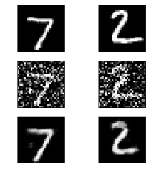
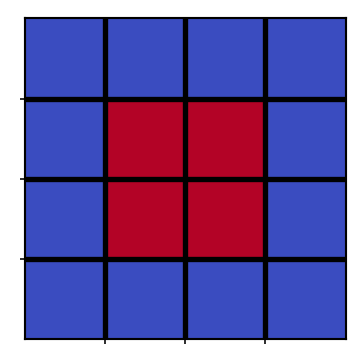
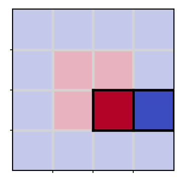
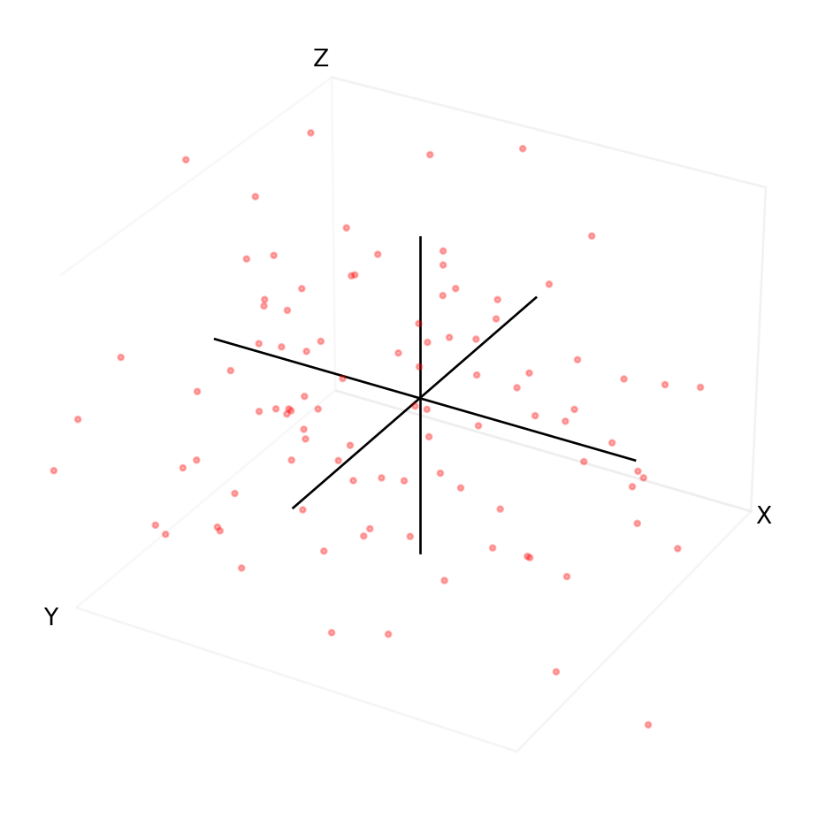
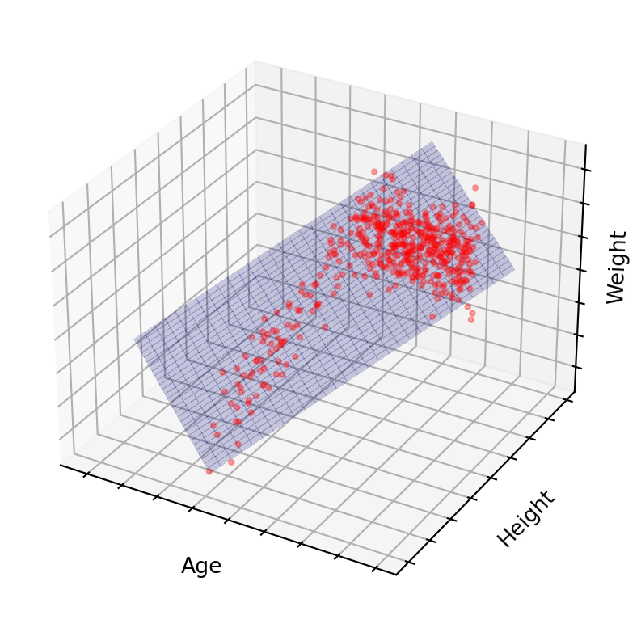
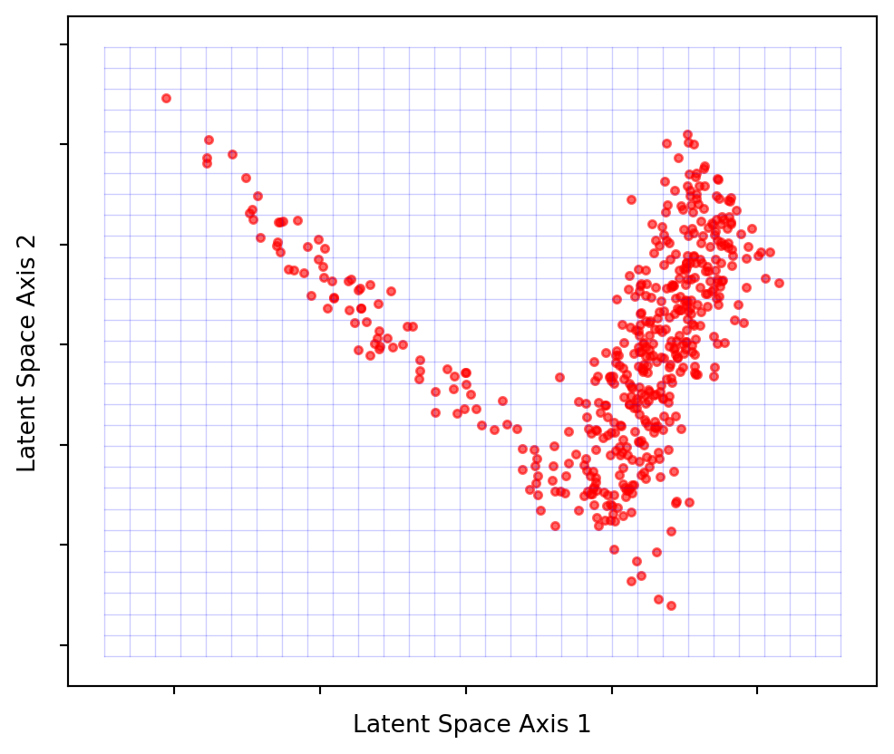
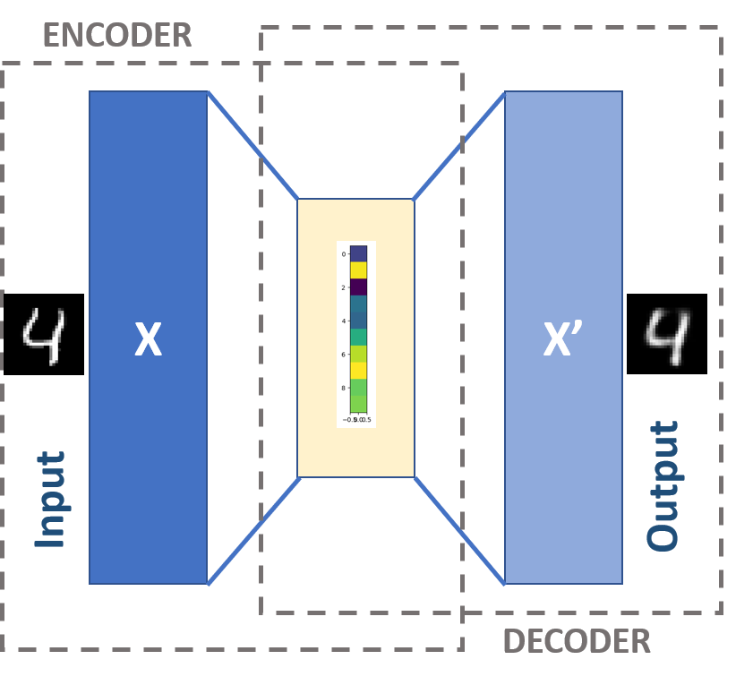
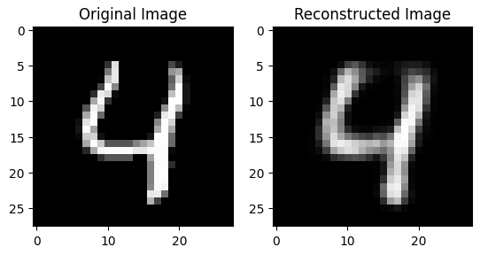
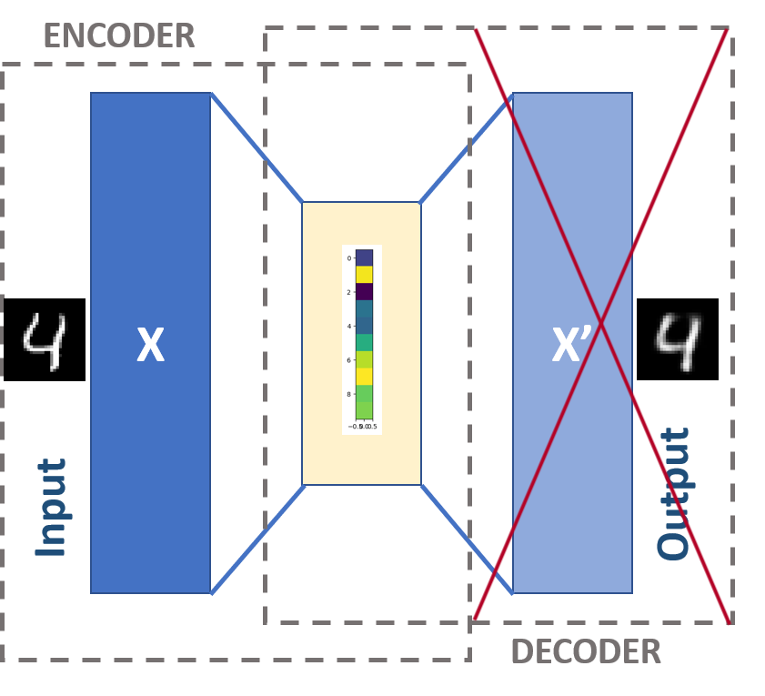
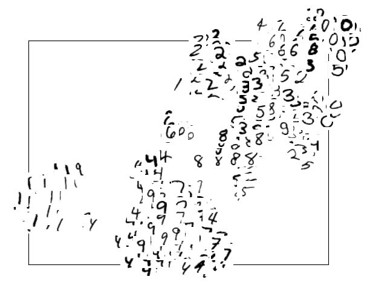

Code
import matplotlib.pyplot as plt
import matplotlib.patches as patches
from matplotlib.colors import ListedColormap
from matplotlib.lines import Line2D
import numpy as np
import warnings
warnings.filterwarnings("ignore")import matplotlib.pyplot as plt
import matplotlib.patches as patches
from matplotlib.colors import ListedColormap
from matplotlib.lines import Line2D
import numpy as np
import warnings
warnings.filterwarnings("ignore")Autoencoders, though not a novel idea in the realm of machine learning, have gained significant attention in recent years due to their powerful capabilities and versatility. With the recent rise in popularity of diffusion models, an understanding of autoencoders has become foundational knowledge to those wishing to learn about the latest models.
Welcome to the first post in a blog series on autoencoders, where we will break down complex concepts into simple, digestible explanations. In this post, we will mostly steer clear of intricate code and mathematical jargon, focusing instead on building your intuition around the fundamental concepts that make autoencoders so fascinating. Later posts in the series will get more technical and build on the concepts described here.
Although autoencoders can be utilized independently for tasks like image reconstruction and denoising (e.g., removing graininess or watermarks), their application extends to more sophisticated models as well. For instance, in Latent Diffusion Models that generate images based on text prompts, autoencoders are component of the overall model. These advanced applications often employ a more complex variant called Variational Autoencoders. Deepfakes are also heavily based on autoencoder architechture However, before delving into these advanced topics, it is worth investing time in understanding the fundamentals of basic autoencoders.



Autoencoders stand out as a unique class of neural network designed to compress input data and subsequently reconstruct it with high accuracy. This ingenious architecture consists of two interconnected neural networks working in tandem. Ultimately, connecting two neural networks together creates a single neural network, but it is useful to think of these as distinct parts when first learning how they work.
The two neural networks are called the encoder and the decoder and are more or less mirror images of each other (Figure 1). The encoder is responsible for compressing the input data into a more compact representation, while the decoder takes on the task of decompressing and reconstructing the compact representation back into the original form. Central to the success of this process is a layer of information nestled between the encoder and decoder. More on that later.

Let’s consider an analogy to illustrate the concept of compression, which is what teh encoder does. Imagine you are tasked with describing the car in Figure 2 to a friend, using only three words. Your friend must then draw and reproduce the car as accurately as possible based on your description.
You might choose the words “orange,” “fast,” and “angular”. In making these choices, you are drawing upon your experiences with other cars and how this particular car is different or similar to them. This allows you to generalize and create categories (also known as “features”) based on aspects such as color, speed, and shape.
If you were allowed more words, your description would likely be more accurate. With 1000 words, you could describe a very reasonable representation. This is true, but only up to a point.
But do you really need 1000 words to be accurate with your description? Could you obtain nearly identical results with only 500 words? Possibly, depending on whether any of the 1000 words were correlated or redundant. You might have the words “fast” and “200mph” in your list which essentially mean the same thing - it won’t help your friend draw the car any better having both.
So, how does this relate to autoencoders? Rather than words, we deal with numbers. In the context of images specifically, we deal with pixel values (a pixel colour is defined by 3 numbers for red, green and blue, e.g. pixel 1 = (100, 200, 90)), each of which can be though of as a feature. The goal of an autoencoder is to minimize redundancy these features. By doing so, it achieves compression, leaving only the most descriptive features that capture the essence of the input data.
Now, let’s examine a practical example of how autoencoders compress and reconstruct data. Consider the original image in Figure 3, which we input into an autoencoder model. A compressed 15x2 representation is generated (as depicted in the middle column). This representation represents the middle layer of the model. Subsequently, the original image is reconstructed from this compressed form. Think about the journey of the image through the autoencoder in Figure 1 and when the transformations from original to middle column to reconstructed occur.
In this example, we have purposefully chosen a lower-quality reconstruction to emphasize that the process may not always be perfect, although it can achieve remarkable accuracy. It is indeed surprising how closely the reconstructed image resembles the original, despite using only a 15x2 representation as the starting point before decoding. At their core, images are simply numerical data on a computer, meaning this concept to be applied across various digital mediums, such as audio and text.

The primary objective of an autoencoder extends beyond merely inputting an image and obtaining a reconstructed version. The true power of autoencoders lies in leveraging the information-rich middle layer in conjunction with a specific task, thereby enhancing the performance of machine learning models. Achieving accurate reconstruction of original data serves as an effective metric for monitoring how well autoencoder model has compressed information because the better it does this, the better the reconstruction. It helps in gauging the model’s ability to capture and represent the essential features of the input data.
The true value of autoencoders lies in how concisely they compress information by capturing only the most defining features of the data. Humans can describe a 1000 pixel image of a car using just three words because our brains already have an algorithm that selects relevant categories as the “middle layer”. We aim to train autoencoders to achieve the same level of proficiency by forcing them to compress information, accomplished by feeding the model numerous images of cars until it learns the essential features.
Identifying these features unlocks many use cases, some of which include:
Moreover, the architecture of autoencoders is well-suited for semi-supervised or unsupervised learning, which simplifies the data acquisition process. We will explore this topic in greater detail in a future post.
To fully comprehend autoencoders, it is helpful to grasp the concept of data compression.
In the context of computers, compression does not literally mean storing the same number of bits of information in a smaller space, like you would compress a gas into a smaller volume of space. Instead, it serves as an analogy for removing bits that are not considered important, thereby reducing the file size—reminiscent of autoencoders. The bits we remove are those we can reproduce using an algorithm.
Although we don’t compress data like we do the air in an oxygen tank, the end result is the same: we end up with something that takes up less space.
Let’s consider a simple example to illustrate this point. Imagine a 4x4 grid with four red squares in the center, surrounded by blue squares. Each square represents one bit of memory, totaling 16 bits of information. Our goal is to create an algorithm capable of compressing the size of this grid. We also know the following facts about blue and red squares:
import matplotlib.pyplot as plt
import numpy as np
grid = np.ones((4, 4))
grid[1:3, 1:3] = 0
cmap = plt.cm.get_cmap('coolwarm_r', 2)
fig, ax = plt.subplots(figsize=(2, 2))
ax.imshow(grid, cmap=cmap, vmin=0, vmax=1)
ax.set_xticks(np.arange(0.5, 3.5, 1), minor=True)
ax.set_yticks(np.arange(0.5, 3.5, 1), minor=True)
ax.grid(which='minor', color='black', linewidth=2)
ax.set_xticks([])
ax.set_yticks([])
plt.tight_layout()
With this knowledge, we can develop an algorithm to compress the information in the image above. We can represent the original image using just one red square and one blue square side by side, as we know that a red square must be accompanied by three more red squares in a 2x2 formation. If a blue square is adjacent to the red square, it must surround the red squares. We have effectively compressed the information from 16 bits to 2 bits, retaining only the core essence of this blue and red square world.
faint_red = (0.705673158, 0.01555616, 0.150232812, 0.3)
faint_blue = (0.2298057, 0.298717966, 0.753683153, 0.3)
red = (0.705673158, 0.01555616, 0.150232812)
blue = (0.2298057, 0.298717966, 0.753683153)
custom_cmap = ListedColormap([faint_red, faint_blue, red, blue])
grid = np.zeros((4, 4))
grid[0, ::1] = 1
grid[3, ::1] = 1
grid[:, 0] = 1
grid[:, 3] = 1
grid[2, 2] = 2
grid[2, 3] = 3
fig, ax = plt.subplots(figsize=(2, 2))
ax.imshow(grid, cmap=custom_cmap, vmin=0, vmax=3)
ax.set_xticks(np.arange(0.5, 3.5, 1), minor=True)
ax.set_yticks(np.arange(0.5, 3.5, 1), minor=True)
ax.grid(which='minor', color='lightgray', linewidth=2)
ax.add_line(Line2D([1.5, 1.5], [1.5, 2.5], color='black', linewidth=2))
ax.add_line(Line2D([2.5, 2.5], [1.5, 2.5], color='black', linewidth=2))
ax.add_line(Line2D([3.5, 3.5], [1.5, 2.5], color='black', linewidth=2))
ax.add_line(Line2D([1.5, 3.5], [1.5, 1.5], color='black', linewidth=2))
ax.add_line(Line2D([1.5, 3.5], [2.5, 2.5], color='black', linewidth=2))
ax.set_xticks([])
ax.set_yticks([])
plt.tight_layout()
It is worth noting the role of the algorithm in this process. To compress and decompress the data, the algorithm must possess an adequate understanding of this tiny world. In our example, we designed the algorithm with pre-existing knowledge.
In most real-world scenarios, there is significantly more data involved, and the relationships are not as easily discernible, leading to more complex algorithms with more intricate pre-existing knowledge.
When dealing with more complex data, such as an image containing a greater number of bits, the design of the algorithm must be more sophisticated. However, the main principle remains the same: devise ways to represent a certain number of bits with fewer bits, which necessitates understanding the essential relationships between those bits of information.
Not all compression algorithms perform equally. Some algorithms allow you to perfectly replicate the original information, referred to as “lossless” compression. Conversely, when the information cannot be replicated flawlessly, it is called “lossy” compression. The jpeg image format, for instance, employs a lossy algorithm. jpeg files are small due to an algorithm working behind the scenes. In general, lossy algorithms can compress more data than lossless ones.
Your choice between the two depends on your specific needs. For an image, a lossy compression may suffice if you only need it to be clear enough to read a document. However, an audiophile seeking a perfect reproduction of their favorite song would likely opt for lossless compression.
What sets autoencoders apart from general compression algorithms?
The term “latent” refers to something that is present but hidden. In this context, compressed representations consisting of fewer dimensions already exist, it is just not obvious from the point of view of the higher dimensional space how to find them.
Consider the plot of random points in Figure 4. To describe any single point, we need 3 pieces of information - the x coordinate, the y coordinate, and the z coordinate. If the data is random, there is no correlation between x, y, and z. In other words, changing x does not affect y or z and vice versa. We say the data spans a 3-dimensional space. There are no latent spaces.
num_points = 100
x = 6 * np.random.randn(num_points)
y = 6 * np.random.randn(num_points)
z = 6 * np.random.randn(num_points)
fig = plt.figure(figsize=(8, 6))
ax = fig.add_subplot(111, projection='3d', facecolor='white')
ax.scatter(x, y, z, c='r', marker='o', alpha=0.3, s=5)
ax.set_xlabel('X', labelpad=-10)
ax.set_ylabel('Y', labelpad=-10)
ax.set_zlabel('Z', labelpad=-10)
ax.grid(False)
ax.set_xlim(-10, 10)
ax.set_ylim(-10, 10)
ax.set_zlim(-10, 10)
ax.xaxis._axinfo['juggled'] = (0, 0, 0)
ax.yaxis._axinfo['juggled'] = (1, 1, 1)
ax.zaxis._axinfo['juggled'] = (2, 2, 2)
ax.set_xticks([])
ax.set_yticks([])
ax.set_zticks([])
ax.plot([-10, 10], [0, 0], [0, 0], color='k', linewidth=1)
ax.plot([0, 0], [-10, 10], [0, 0], color='k', linewidth=1)
ax.plot([0, 0], [0, 0], [-10, 10], color='k', linewidth=1)
ax.xaxis.pane.fill = False
ax.yaxis.pane.fill = False
ax.zaxis.pane.fill = False
plt.show()
Now let’s say x, y and z represent real world features: physical human traits.
x = agey = heightz = weightThe data would no longer be random. There are relationships between age,height, and weight. Additionally, some combinations of age, height and weight never occur in reality. You’ll be hard-pressed to find a 300 kg 4-year-old measuring 50 cm tall. So, if we have good sources of data, the model will also tend to believe such combinations are not possible. There are underlying physiological rules defining the relationship. Those rules define a latent space.
Conversely, given two of these values, we can make an approximate guess at the third. If we can do that, then there likely exists a smaller dimensional space in which our data also resides, one that does not require all the features. If done correctly, it might only take 1 or 2 coordinates to describe any human by these traits.
The goal is to discover a structure that serves as our new coordinate system, allowing navigation with just two coordinates. Autoencoders, particularly the encoder portion, accomplish this by seeking a lower-dimensional latent space. The autoencoder’s middle layer asserts the existence of a latent space of size \(w\) and compels the network to find such a representation. Lacking this constraint, the middle layer would remain in its original high-dimensional space, merely copying the input and functioning as an identity transformation (multiplying everything by 1).
Figure 5 demonstrates that the majority of points lie on or near a 2D latent space. By projecting these points onto the blue grid as close to their original positions as possible, we can create a 2-dimensional visualization. What the axes represent is no longer as simple as height, weight or age, but some combination of all of them. Due to this projection, the points won’t precisely match their original locations, but they will be close. This process is analogous to the slightly blurred, imperfect image reconstruction from earlier on.
import numpy as np
import matplotlib.pyplot as plt
from mpl_toolkits.mplot3d import Axes3D
from sklearn.decomposition import PCA
def generate_data(num_points):
age = np.random.randint(low=1, high=100, size=num_points)
height = np.zeros(num_points)
for i, a in enumerate(age):
base_height = 50
growth_factor = 6
if a <= 20:
growth_rate = a / 4.0
height[i] = base_height + a * growth_factor + np.random.normal(loc=0, scale=20)
else:
max_height = base_height + 20 * growth_factor
height[i] = max_height + np.random.normal(loc=0, scale=5)
weight = height * 0.5 + 1.2 * np.random.normal(loc=0, scale=10, size=num_points)
data = np.column_stack((age, height, weight))
return data
data = generate_data(500)
pca = PCA(n_components=2)
latent_space = pca.fit_transform(data)
grid_size = 30
x_grid, y_grid = np.meshgrid(np.linspace(latent_space[:, 0].min(), latent_space[:, 0].max(), grid_size),
np.linspace(latent_space[:, 1].min(), latent_space[:, 1].max(), grid_size))
latent_grid = np.column_stack((x_grid.ravel(), y_grid.ravel()))
projected_grid = pca.inverse_transform(latent_grid)
age_grid, height_grid, weight_grid = projected_grid[:, 0].reshape(grid_size, grid_size), projected_grid[:, 1].reshape(grid_size, grid_size), projected_grid[:, 2].reshape(grid_size, grid_size)
fig = plt.figure()
ax = fig.add_subplot(111, projection='3d')
ax.scatter(data[:,0], data[:,1], data[:,2], c='r', marker='o', alpha=0.3, s=5, label='Original Data')
ax.plot_surface(age_grid, height_grid, weight_grid, alpha=0.2, color='blue', linewidth=0, antialiased=False, label='Latent Space')
ax.set_xlabel('Age', labelpad=-5)
ax.set_ylabel('Height', labelpad=-5)
ax.set_zlabel('Weight', labelpad=-10)
ax.set_xticklabels([])
ax.set_yticklabels([])
ax.set_zticklabels([])
plt.show()
fig, ax = plt.subplots(figsize=(6,5))
ax.scatter(-latent_space[:, 0], -latent_space[:, 1], c='r', marker='o', alpha=0.6, s=10)
x_min, x_max = latent_space[:, 0].min(), latent_space[:, 0].max()
y_min, y_max = latent_space[:, 1].min(), latent_space[:, 1].max()
margin = 0.1
x_range = x_max - x_min
y_range = y_max - y_min
x_grid, y_grid = np.meshgrid(np.linspace(x_min - margin * x_range, x_max + margin * x_range, 30),
np.linspace(y_min - margin * y_range, y_max + margin * y_range, 30))
for i in range(x_grid.shape[0]):
ax.plot(-x_grid[i, :], -y_grid[i, :], c='blue', alpha=0.2, linewidth=0.5)
ax.plot(-x_grid[:, i], -y_grid[:, i], c='blue', alpha=0.2, linewidth=0.5)
ax.set_xlabel('Latent Space Axis 1')
ax.set_ylabel('Latent Space Axis 2')
ax.set_xticklabels([])
ax.set_yticklabels([])
plt.show()

Latent spaces will not be so easy to visualise when it comes to complex data, and won’t be a flat plane. This is why we want the Autoencoder to figure out the shape for us.
In this section, we will cover a high level the fundamental concepts of how Autoencoders compress and reconstruct data using the MNIST dataset as an example. A more in-depth training guide will be provided in a future post.
The MNIST dataset (Figure 6) consists of 28x28 pixel images of handwritten digits from 0 to 9, resulting in 28x28=784 features (each pixel is a feature) to describe a digit.
We will explore the following aspects of the model:

Examining the code that defines the autoencoder’s architecture using the MNIST data helps us understand how it reduces the dimensionality of the data. The code below uses the Pytorch library to define the model layers.
The important lines of code involve the Linear() function (a linear layer), which essentially takes us from a dimension of size \(a\) to a dimension of size \(b\) via Linear(a,b).
The encoder part of the model (self.encoder) reduces the data’s dimension through these linear layers, little by little: 28*28 -> 128 -> 64 -> 32 -> 10.
The decoder (self.decoder) is the same process, but in reverse: linear layers go from smallest dimension (the middle layer, consiting of 10 dimensions) to the original dimension of the image: 10 -> 32 -> 64 -> 128 -> 28*28. This is where the reconstruction happens.
self.encoder = torch.nn.Sequential(
Linear(28 * 28, 128),
# ReLU(),
Linear(128, 64),
# ReLU(),
Linear(64, 32),
# ReLU(),
Linear(32, 10),
)
self.decoder = torch.nn.Sequential(
Linear(10, 32),
# ReLU(),
Linear(32, 64),
# ReLU(),
Linear(64, 128),
# ReLU(),
Linear(128, 28 * 28),
# Sigmoid(),
)This very autoencoder architecture was used to create the reconstruction in Figure 7. Again, the reconstructed image is intentionally blurred to better illustrate the concept of reconstruction. In practice, with such small images, an autoencoder can achieve reconstructions that more closely resemble the original input.


When an image is processed through this model, it generates a reconstructed output. However, if we halt the process at the middle layer, we obtain the 10-dimensional latent space representation, which consists of a set of 10 coordinates.


Moreover, we can visualise the latent space by plotting the positions of multiple images that were passed through the encoder layer only in (Figure 11). In order to interpret what a 10-dimensional space looks like, we need to approximate it by further flattening it down to 2 dimensions using a technique called t-SNE (how this works is not important to understand).
Observe how similar-looking digits cluster together, signifying that the model’s middle layer can discern the resemblance between different digits. Most notably, we can now characterize a particular digit, such as “1,” using only two coordinates instead of the original 784 features, highlighting the power of autoencoders for dimensionality reduction.
from matplotlib import pyplot as plt
import numpy as np
from pathlib import Path
from sklearn.manifold import TSNE
import torch
from torch.utils.data import DataLoader
import torchvision
from tqdm import tqdm
train_ds = torchvision.datasets.MNIST(
"../data",
train=True,
download=True,
transform=torchvision.transforms.Compose(
[
torchvision.transforms.ToTensor(),
]
),
)
test_ds = torchvision.datasets.MNIST(
"../data",
train=False,
download=True,
transform=torchvision.transforms.Compose(
[
torchvision.transforms.ToTensor(),
]
),
)
epochs = 20
batch_size = 128
train_loader = DataLoader(dataset=train_ds, batch_size=batch_size, shuffle=True)
test_loader = DataLoader(dataset=test_ds, batch_size=batch_size, shuffle=False)
class AutoEncoder(torch.nn.Module):
def __init__(self):
super().__init__()
self.encoder = torch.nn.Sequential(
torch.nn.Linear(28 * 28, 128),
torch.nn.ReLU(),
torch.nn.Linear(128, 64),
torch.nn.ReLU(),
torch.nn.Linear(64, 32),
torch.nn.ReLU(),
torch.nn.Linear(32, 10),
)
self.decoder = torch.nn.Sequential(
torch.nn.Linear(10, 32),
torch.nn.ReLU(),
torch.nn.Linear(32, 64),
torch.nn.ReLU(),
torch.nn.Linear(64, 128),
torch.nn.ReLU(),
torch.nn.Linear(128, 28 * 28),
torch.nn.Sigmoid(),
)
def forward(self, x):
enc = self.encoder(x)
dec = self.decoder(enc)
return dec
device = torch.device("cuda:0" if torch.cuda.is_available() else "cpu")
model = AutoEncoder()
# model = torch.compile(model) #if using torch 2.0
model.to(device)
loss_f = torch.nn.MSELoss()
opt = torch.optim.Adam(model.parameters(), lr=2e-3)
out = []
losses = []
def train_model():
model.train()
for epoch in tqdm(range(epochs)):
for img, _ in train_loader:
img = img.reshape(-1, 28 * 28).to(device)
reconstructed = model(img)
loss = loss_f(reconstructed, img)
opt.zero_grad()
loss.backward()
opt.step()
losses.append(loss.item())
print(f"Loss: {loss.item()}")
out.append((epoch, img, reconstructed))
model_name = "model_weights.pt"
if Path(model_name).exists():
model.load_state_dict(torch.load(model_name))
else:
train_model()
torch.save(model.state_dict(), model_name)
test_image, _ = test_ds[4]
encoded_data = []
original_images = []
c = 0
for i, (img, label) in tqdm(enumerate(test_loader)):
c += 1
img_flat = img.reshape(-1, 28 * 28)
out = model.encoder(img_flat)
encoded_data.extend(out.detach().cpu().numpy())
original_images.extend(img_flat.cpu().numpy())
if c > 3:
break
tsne = TSNE(n_components=2, random_state=42)
tsne_output = tsne.fit_transform(np.array(encoded_data))
fig, ax = plt.subplots()
image_size = 28
padding = 0.06
padding_in_pixels = int(padding * image_size)
tsne_min, tsne_max = np.min(tsne_output, axis=0), np.max(tsne_output, axis=0)
tsne_range = tsne_max - tsne_min
normalized_output = (tsne_output - tsne_min) / tsne_range
for idx, (x, y) in tqdm(enumerate(normalized_output)):
x_pos = x * (1 - 2 * padding) + padding
y_pos = y * (1 - 2 * padding) + padding
image = original_images[idx].reshape(28, 28)
im = np.array(image, dtype=np.float32)
ab = plt.Axes(fig, [x_pos, y_pos, padding, padding])
ab.set_axis_off()
fig.add_axes(ab)
ab.imshow(im, cmap="gray_r")
ax.set_xticks([])
ax.set_yticks([])
plt.show()
An autoencoders’ ability to learn essential features from the input data holds significant value. This knowledge becomes highly beneficial when applied to more sophisticated and engaging machine learning challenges.
In Part 2, we will delve into implementation of autoencoder-based models to put the concepts discussed here into a full example.